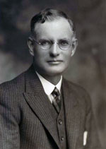

Did you know?
Higher education is not essential to becoming Prime Minister, two notable examples being:- John Curtin
 Paul Keating
Paul Keating
After School
Almost all PM’s have finished school and then proceeded to get a higher education at a university. Some study overseas while others study within Australia. The most common degree that PMs have chosen to study is law.
The universities with the most graduates who went on to being the Prime Minister are:
- Sydney University
- Melbourne University
- Oxford University